300: Rise of an Empire 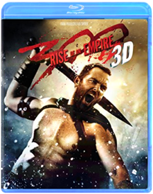 Noam MurroAbraham Lincoln: Vampire Hunter 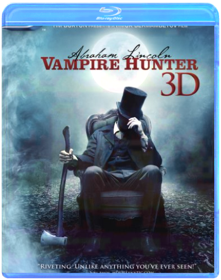 Timur BekmambetovAbraham Lincoln: Vampire Hunter explores the secret life of our greatest president, and the untold story that shaped our nation. Visionary filmmakers Tim Burton and Timur Bekmambetov (Director of Wanted) bring a fresh and visceral voice to the bloodthirsty lore of the vampire, imagining Lincoln as history's greatest hunter of the undead.The Adventures of Tintin Steven SpielbergFrom Academy Award®-winning filmmakers Steven Spielberg and Peter Jackson comes the epic adventures of Tintin. Racing to uncover the secrets of a sunken ship that may hold a vast fortune — but also an ancient curse — Tintin and his loyal dog Snowy embark on an action-packed journey around the world that critics are calling “fun for the whole family.”* *ABC-TV (Chicago)Prometheus Ridley ScottLegendary director Ridley Scott (Alien, Blade Runner) returns to his sci-fi origins in this epic adventure bursting with spectacular action and mind-blowing visual effects. A team of scientists and explorers travels to the darkest corners of the universe searching for the origins of human life. Instead they find a dark, twisted world that hides a terrifying threat capable of destroying them...and all mankind!Amazing Spider-Man Marc WebbThe Amazing Spider-Man is the story of Peter Parker (Garfield), an outcast high schooler who was abandoned by his parents as a boy, leaving him to be raised by his Uncle Ben (Sheen) and Aunt May (Field). Like most teenagers, Peter is trying to figure out who he is and how he got to be the person he is today. Peter is also finding his way with his first high school crush, Gwen Stacy (Stone), and together, they struggle with love, commitment, and secrets. As Peter discovers a mysterious briefcase that belonged to his father, he begins a quest to understand his parents' disappearance - leading him directly to Oscorp and the lab of Dr. Curt Connors (Ifans), his father's former partner. As Spider-Man is set on a collision course with Connors' alter-ego, The Lizard, Peter will make life-altering choices to use his powers and shape his destiny to become a hero.
Related Products
Marvel StoreThe Amazing Spider-Man 2 Marc WebbIt’s great to be Spider-Man (Andrew Garfield). For Peter Parker, there’s no feeling quite like swinging between skyscrapers, embracing being the hero, and spending time with Gwen (Emma Stone). But being Spider-Man comes at a price: only Spider-Man can protect his fellow New Yorkers from the formidable villains that threaten the city. With the emergence of Electro (Jamie Foxx), Peter must confront a foe far more powerful than himself. And as his old friend, Harry Osborn (Dane DeHaan), returns, Peter comes to realize that all of his enemies have one thing in common: Oscorp.The Angry Birds Movie 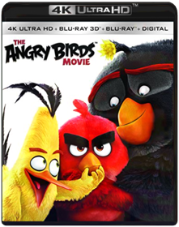 Clay Kaytis, Fergal ReillyIn this hilarious animated adventure comedy, you'll finally find out why the birds are so angry. In an island paradise populated entirely by happy, flightless birds – or almost entirely, Red, a bird with a temper problem, speedy Chuck, and the volatile Bomb have always been outsiders. But when the island is visited by mysterious green piggies, it’s up to these unlikely outcasts to figure out what the pigs are up to.Avatar 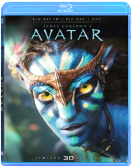 James CameronJames Cameron's AVATAR comes to life as never before - now in eye-popping 3D for the ultimate home viewing experience.Beauty and the Beast Gary Trousdale, Kirk WiseDisney's beloved modern classic is brilliantly transformed to a new dimension of entertainment through the magic of Blu-ray 3D! The award-winning music you'll never forget envelops you while the enchanting characters who fill your heart dance into your living room and come to life in Blu-ray 3D. So be our guest and join the independent Belle and the Beast with the soul of a prince as they cast a spell like never before on Disney Blu-ray 3D — Magic in a New Dimension!Big Hero 6 3D Roy ConliAll Regions UK blu-ray release, playable on all worldwide blu-ray players. Please note that Disney Rewards are not available in the US (only in the UK). Academy Award-winning animated comedy by Walt Disney Studios featuring the voice talents of Scott Adsit and Ryan Potter. 14-year-old robotics genius Hiro Hamada (Potter) spends his days being a typical teenager, getting into fights and struggling to cope with his changing body. When his older brother Tadashi (Daniel Henney) becomes concerned that his brother is wasting his potential, he takes him to the robotics lab at his university where he introduces him to Baymax (Adsit), an inflatable robot created and developed by Tadashi himself. Programmed to take care of humans, Baymax starts to work with Hiro and encourages him to focus on his invention of microbots. When Hiro and Baymax discover that someone has been copying his ideas and creating microbots of their own, the pair team up to find the masked assailant. The film won the Academy Award for Best Animated Feature. Bonus Features: Academy Award Winning Theatrical Short: Feast The Origin Story Of Big Hero 6: Hiro's Journey Big Hero Secrets Big Animator 6: The Characters Behind The Characters Deleted Scenes Big Hero 6 Theatrical Teaser Mickey Mouse Short Tokyo GoBook Of Life Jorge R. GutiérrezFrom producer Guillermo del Toro and director Jorge Gutierrez comes an animated comedy with a unique visual style. THE BOOK OF LIFE is the journey of Manolo, a young man who is torn between fulfilling the expectations of his family and following his heart. Before choosing which path to follow, he embarks on an incredible adventure that spans three fantastical worlds where he must face his greatest fears. Rich with a fresh take on pop music favorites, THE BOOK OF LIFE encourages us to celebrate the past while looking forward to the future.Brave Steve Purcell, Mark Andrews, Brenda ChapmanSet in the rugged and mysterious Highlands of Scotland, Disney Pixar's Brave follows the heroic journey of Merida (voice of Kelly Macdonald), a skilled archer and headstrong daughter of King Fergus (voice of Billy Connolly) and Queen Elinor (voice of Emma Thompson). Determined to change her fate, Merida defies an age-old custom sacred to the unruly and uproarious lords of the land: massive Lord MacGuffin (voice of Kevin McKidd), surly Lord Macintosh (voice of Craig Ferguson) and cantankerous Lord Dingwall (voice of Robbie Coltrane), unleashing chaos in the kingdom. When she turns to an eccentric Witch (voice of Julie Walters), she is granted an ill-fated wish and the ensuing peril forces Merida to harness all of her resources including her mischievous triplet brothers to undo a beastly curse and discover the meaning of true bravery.Cars 2 Directed By John Lasseter, Co-Director: Brad LewisRev up for Cars 2, Disney/Pixar's laugh-out-loud adventure! Everyone's favorite Cars characters leave Radiator Springs to travel the globe with Lightning McQueen and his best friend Mater, as he competes in the first ever World Grand Prix! Meanwhile, Mater unwittingly gets caught up in a top-secret, action-packed, global spy mission. Powered by the genuine emotion that Disney/Pixar always delivers and with a colorful new all-car cast that includes secret agents, menacing villains, and international racing competitors, Cars 2 is non-stop fun for the entire family!The Croods 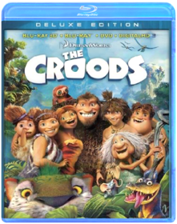 Join the first modern family as they embark on the journey of a lifetime across a spectacular and unforgettable landscape. When their cave is destroyed, everything the Croods have ever known is rocked by seismic shifts and generational clashes as they discover an incredible new world filled with fantastic creatures - and their world is changed forever. If they don’t evolve, they’ll be history!Man of Steel Zack SnyderA young boy learns that he has extraordinary powers and is not of this Earth. As a young man, he journeys to discover where he came from and what he was sent here to do. But the hero in him must emerge if he is to save the world from annihilation and become the symbol of hope for all mankind.Wonder Woman Limited Edition 3D+2D+Digital HD with Trading Cards!! Both discs are region-free!Justice League Zack SnyderMinions Pierre Coffin, Kyle BaldaThe Minions, breakout stars from "Despicable Me," are presented in an origin story that showcases their unpredictable personality and physicality, and pairs them with equally memorable human characters. As it turns out, Minions have existed since the beginning of time. They have evolved from single (yellow) cell organisms into the familiar beings we know, and they live for a collective purpose: to seek out and serve the most despicable master they can find. Academy Award winner Sandra Bullock will lead the voice cast of the human characters as Scarlett Overkill, the world's reigning super-villain of the 1960s.Despicable Me Pierre Coffin, Chris RenaudGru delights in all things wicked. Surrounded by an army of tireless, little yellow minions, and armed with his arsenal of shrink rays, freeze rays and battle-ready vehicles for land and air, he vanquishes all who stand in his way. Until the day he encounters the immense will of three little orphaned girls who look at him and see something that no one else has ever seen: a potential Dad. - DESPICABLE ME 3DDespicable Me 2 Gregory Perler, Chris Renaud, Pierre CoffinGru, his adorable girls, and the mischievous Minions are back with a cast of unforgettable new characters in the blockbuster sequel to the worldwide phenomenon. Just as Gru has given up being super-bad to be a super-dad, the Anti-Villain League recruits him to track down a new criminal mastermind and save the world. Partnered with secret agent Lucy Wilde, Gru, along with the wildly unpredictable Minions, must figure out how to keep his cover while also keeping up with his duties as a father. Assemble the Minions for laugh-out-loud comedy in "one of the funniest, most enjoyable movies ever!" (MovieGuide)Doctor Who: The Day of the Doctor VariousThe Doctors embark on their greatest adventure in this 50th Anniversary Special. In 2013, something terrible is awakening in London’s National Gallery; in 1562, a murderous plot is afoot in Elizabethan England; and somewhere in space, an ancient battle reaches its devastating conclusion. All of reality is at stake as the Doctor’s own dangerous past comes back to haunt him.Dredd Pete TravisHigh octane sci-fi action movie with all-out, guns-blazing, bone-crushing, explosives-laden action. Based on the popular comic book character JUDGE DREDD.
The future America is an irradiated wasteland. On its East Coast lies Mega City One - a vast violent metropolis where criminals rule the chaotic streets. The only force of order lies with the urban cops called "Judges" who possess the combined powers of judge jury and instant executioner. The ultimate Judge Dredd (Karl Urban) is tasked with ridding the city of its latest scourge -a dangerous drug and the sadistic prostitute turned drug pusher who is using it to take over the city.Epic 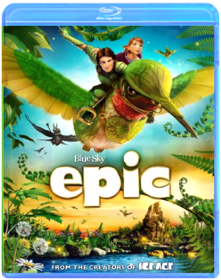 From the creators of Ice Age comes the year’s funniest, most exhilarating animated adventure! Transported to a magical world, a teenager (Amanda Seyfried) is recruited by a nature spirit, Queen Tara (Beyoncé Knowles), to help the “Leafmen” save their forest from evil warriors. The whole family will love this fast-paced thrill-ride, with its astonishing animation and an all-star voice cast that includes Colin Farrell, Oscar® Winner Christoph Waltz and Steven Tyler!The Final Destination David R. EllisAfter a teen's premonition of a deadly race-car crash helps saves the lives of his peers, Death sets out to collect those who evaded their end.Final Destination 5 Steven QualeDeath is just as omnipresent as ever, and in Final Destination 5 it strikes again. During the bus ride to a corporate retreat, Sam (Nicholas D'Agosto) has a premonition in which he and most of his friends - as well as numerous others - die in a horrific bridge collapse. When his vision ends, events begin to mirror what he had seen, and he frantically ushers as many of his colleagues - including his friend, Peter (Miles Fisher), and girlfriend, Molly (Emma Bell) - away from the disaster before Death can claim them. But these unsuspecting souls were never supposed to survive, and in a terrifying race against time, the ill-fated group tries to discover a way to escape Death's sinister agenda.
This pack also includes the 2D version of the film on standard Blu-ray, DVD and UltraViolet Digital Copy.
Languages: English, Français & Español.
Subtitles: English SDH, Français & Español.
Blu-ray Special Features (Presented in 2D):
- Alternate Death Scenes
- Visual Effects of Death: Two Special Effects Split-Screen Features
- Final Destination 5: Circle of Death, Your Final DestinationFinding Nemo Andrew StantonSea it like never before! For the first time ever, through the magic of Blu-ray and Blu-ray 3D, fully immerse yourself in the stunning underwater world of Disney/Pixar's FINDING NEMO! From the creators of TOY STORY and MONSTERS, INC., this critically acclaimed and heartwarming tale splashes off the screen with brilliant digital picture, high definition sound and breathtaking interactive 3D bonus features that transport you beyond your imagination. In the depths of the Great Barrier Reef, Marlin (Albert Brooks), an overly protective clownfish, embarks on a daring rescue mission when his beloved son, Nemo, gets scooped up by a diver. With his unforgettable friend Dory (Ellen DeGeneres) by his side, Marlin encounters an ocean full of memorable comedic characters on his momentous journey to find Nemo. Bring home the humor and heartfelt emotion of the epic adventure that captured the Academy Award for "Best Animated Feature Film" (2003) — now more awesome than ever on Disney Blu-ray 3D! It's Magic In A New Dimension!Finding Dory Andrew StantonFrom the Academy Award(R)-winning creators of Disney-Pixar's FINDING NEMO (Best Animated Feature, 2003) comes an epic undersea adventure filled with imagination, humor and heart. When Dory, the forgetful blue tang (Ellen DeGeneres), suddenly remembers she has a family who may be looking for her, she, Marlin (Albert Brooks) and Nemo (Hayden Rolence) take off on a life-changing quest to find them...with help from Hank, a cantankerous octopus; Bailey, a beluga whale who's convinced his biological sonar skills are on the fritz' and Destiny, a nearsighted whale shark! Bring home the movie overflowing with unforgettable characters, dazzling animation and gallons of bonus extras!Frozen Chris Buck, Jennifer LeeAll Regions blu-ray release, playable on all worldwide blu-ray players. Features both 3D and 2D blu-ray formats.
Featuring the voices of Kristen Bell and Idina Menzel, "Frozen" is the coolest comedy-adventure ever to hit the big screen. When a prophecy traps a kingdom in eternal winter, Anna, a fearless optimist, teams up with extreme mountain man Kristoff and his sidekick reindeer Sven on an epic journey to find Anna's sister Elsa, the Snow Queen, and put an end to her icy spell. Encountering mystical trolls, a funny snowman named Olaf, everest-like extremes and magic at every turn, Anna and Kristoff battle the elements in a race to save the kingdom from destruction.Gamer PLEASE NOTE: This title includes a Blu-ray 3D disc which is only compatible with 3D Blu-ray players and Playstation 3. A standard Blu-ray is also included which will play on all standard Blu-ray players.Gerard Butler stars as Kable condemned criminal and globally famous super-soldier in the ultimate multiplayer game Slayers. Human controllers direct each thought and move of real-life prison inmates battling in hyper-intense environments - where the goal is freedom and the penalty is death. But when Kable suddenly decides he wants out his rebellion threatens the twisted plans of game creator Ken Castle (Michael C. Hall TV's Dexter) who will stop at nothing to crush the renegade commando in this taut adrenaline-packedGodzilla Gareth EdwardsIn this gritty, realistic sci-fi action epic, Godzilla returns to its roots as one of the world's most recognized monsters. Directed by Gareth Edwards and featuring an all-star international cast, this spectacular adventure pits Godzilla against malevolent creatures that, bolstered by humanity's scientific arrogance, threaten our very existence.Kong Skull Island Jordan Vogt-RobertsA team of adventurers explores an uncharted island in the Pacific but their mission of discovery becomes one of survival when they venture into the domain of Kong.The Good Dinosaur Peter SohnFrom the innovative minds of Disney-Pixar comes a hilariously heartwarming adventure about the power of confronting and overcoming your fears and discovering who you are meant to be. THE GOOD DINOSAUR asks the question: what if the asteroid that forever changed life on Earth missed the planet completely, and giant dinosaurs never became extinct? In this epic journey into the world of dinosaurs, an apatosaurus named Arlo makes an unlikely human friend. While traveling through a harsh and mysterious landscape, Arlo learns the power of confronting his fears and discovers what he is truly capable of. Bring home this original story full of humor, heart, action and imagination, perfect for the whole family!Gravity Alfonso CuaronGRAVITY, directed by Oscar nominee Alfonso Cuaron, stars Oscar winners Sandra Bullock and George Clooney in a heart-pounding thriller that pulls you into the infinite and unforgiving realm of deep space. Bullock plays Dr. Ryan Stone, a brilliant medical engineer on her first shuttle mission, with veteran astronaut Matt Kowalsky (Clooney). But on a seemingly routine spacewalk, disaster strikes. The shuttle is destroyed, leaving Stone and Kowalsky completely alone.A Very Harold & Kumar Christmas Todd Strauss-SchulsonFollowing years of growing apart, Harold Lee (Cho) and Kumar Patel (Penn) have replaced each other with new friends and are preparing for their respective Yuletide celebrations. But when a mysterious package mistakenly arrive at Kumar’s door on Christmas Eve, his attempts to redirect it to Harold’s house ends with the “high grade” contents – and Harold’s father-in-law’s prize Christmas tree – going up in smoke. With his in-laws out of the house for the day, Harold decides to cover his tracks, rather than come clean. Reluctantly embarking on another ill-advised journey with Kumar, through New York City, their search for the perfect replacement tree takes them through party heaven – and almost blows Christmas Eve sky high.Fantastic Beasts and Where to Find Them 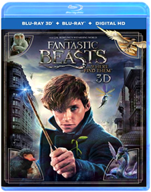 David YatesHarry Potter and the Deathly Hallows Part 1 David YatesBring the adventure of Harry Potter and the Deathly Hallows, Part 1 into your home in HD on Blu-ray 3D.
Harry, Ron and Hermione set out on their perilous mission to track down and destroy the secret to Voldemort's immortality and destruction - the Horcruxes. On their own and on the run, the three friends must now rely on one another more than ever... but Dark Forces in their midst threaten to tear them apart. Meanwhile the wizarding world has become a dangerous place. The long-feared war has begun and the Dark Lord has seized control of the Ministry of Magic and even Hogwarts, terrorizing and arresting all who might oppose him. The Chosen One has become the hunted one as the Death Eaters search for Harry with orders to bring him to Voldemort... alive.
This pack also includes the 2D version of the film on standard Blu-ray, DVD and Ultraviolet Digital Copy.
Blu-ray Special Features (Presented in 2D):
- Maximum Movie Mode
- The Seven Harrys
- On The Green With Rupert, Tom, Oliver And James
- Dan, Rupert and Emma's Running Competition
- Additional Scenes
- Harry Potter and the Deathly Hallows, Part 1: Behind The Soundtrack
Note: To watch the 3D version of this movie, you need a 3D HDTV, compatible 3D glasses, a Blu-ray 3D player (or PlayStation 3) and a high-speed HDMI cable.Harry Potter and the Deathly Hallows Part 2 David YatesBring the adventure of Harry Potter and the Deathly Hallows, Part 1 into your home in HD on Blu-ray 3D.
Harry, Ron and Hermione set out on their perilous mission to track down and destroy the secret to Voldemort's immortality and destruction - the Horcruxes. On their own and on the run, the three friends must now rely on one another more than ever... but Dark Forces in their midst threaten to tear them apart. Meanwhile the wizarding world has become a dangerous place. The long-feared war has begun and the Dark Lord has seized control of the Ministry of Magic and even Hogwarts, terrorizing and arresting all who might oppose him. The Chosen One has become the hunted one as the Death Eaters search for Harry with orders to bring him to Voldemort... alive.
This pack also includes the 2D version of the film on standard Blu-ray, DVD and Ultraviolet Digital Copy.
Blu-ray Special Features (Presented in 2D):
- Maximum Movie Mode
- The Seven Harrys
- On The Green With Rupert, Tom, Oliver And James
- Dan, Rupert and Emma's Running Competition
- Additional Scenes
- Harry Potter and the Deathly Hallows, Part 1: Behind The Soundtrack
Note: To watch the 3D version of this movie, you need a 3D HDTV, compatible 3D glasses, a Blu-ray 3D player (or PlayStation 3) and a high-speed HDMI cable.How to Train Your Dragon How to Train Your DragonA winner with audiences and critics alike, DreamWorks Animation's How To Train Your Dragon rolls fire-breathing action, epic adventure and laughs into a captivating and original story. Hiccup is a young Viking who defies tradition when he befriends one of his deadliest foes - a ferocious dragon he calls Toothless. Together, the unlikely heroes must fight against all odds to save both their worlds in this 'wonderful good-time hit!' - (Gene Shalit, Today).How to Train Your Dragon 2 Dean DeBloisFrom DreamWorks, the studio behind the Academy Award-Nominated film, How to Train Your Dragon, comes the next chapter in the epic trilogy. When Hiccup and Toothless discover a secret ice cave with wild dragons and a mysterious Dragon Rider, the two friends find themselves in an epic battle to save the future of man and dragons! Also includes the all-new adventure DreamWorks Dragons: Dawn of the Dragon Racers!Inside Out 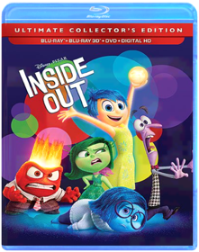 When 11-year-old Riley moves to a new city, her Emotions team up to help her through the transition. Joy, Fear, Anger, Disgust and Sadness work together, but when Joy and Sadness get lost, they must journey through unfamiliar places to get back home.Jurassic Park Steven SpielbergStudio: Uni Dist Corp. (mca) Release Date: 04/23/2013 Rating: Pg13Jurassic World 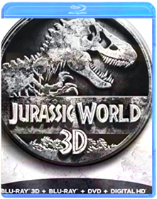 Colin TrevorrowSteven Spielberg returns to executive produce the long-awaited next installment of his groundbreaking Jurassic Park series, Jurassic World, an epic action-adventure.Jurassic World: Fallen Kingdom J.A. BayonaIt's been three years since theme park and luxury resort, Jurassic World was destroyed by dinosaurs out of containment. Isla Nublar now sits abandoned by humans while the surviving dinosaurs fend for themselves in the jungles. When the island's dormant volcano begins roaring to life, Owen (Chris Pratt) and Claire (Bryce Dallas Howard) mount a campaign to rescue the remaining dinosaurs from this extinction-level event.Legend of the Guardians-Owls of Ga'hoole Acclaimed filmmaker Zack Snyder (300, Watchmen) makes his animation debut with this fantasy adventure based on the beloved books by Kathryn Lasky. Young owl Soren marvels at his father's epic stories of the Guardians of Ga'Hoole, mythic winged warriors who fought a great battle to save all owl kind from the evil Pure Ones. When he and brother Kludd fall from their treetop home and into the talons of the Pure Ones, it's up to Soren to make a daring escape with the help of other brave owls. Together they seek the Great Tree, home of the Guardians - the only hope of defeating the Pure Ones and saving the owl kingdoms. The stellar voice cast includes Abbie Cornish, Miriam Margolyes, Helen Mirren, Sam Neill, Geoffrey Rush, Jim Sturgess and Hugo Weaving.The Lego Movie Phil Lord, Christopher MillerVideoTapeWorm.com says: In a world of Legos where ''Everything Is Awesome'', a ''perfectly average'' Lego man, voiced by Chris Pratt and dedicated to uniformity, finds himself declared ''extraordinary'' and is thus thrust into a quest to save the Lego universe. The expensive voice talent gets lost amid the breathtaking animation, hilarious puns, and painfully cheap humor, all of which builds to a fever pitch until halted by a brief live-action segment that sets up you up for an off-the-rails finale. We're embarrassed at how much we enjoyed this movie. A must-own.The Lego Batman Movie Chris McKayThe Lion King The wait is over. For the first time ever, experience the majesty of Disney’s epic animated masterpiece as it roars off the screen and into your living room on Blu-ray and Blu-ray 3D. With a spectacular digital picture, spine-tingling high definition sound and immersive bonus features—you will feel the love for this critically acclaimed and universally beloved classic like never before.
Embark on an extraordinary coming-of-age adventure as Simba, a lion cub who cannot wait to be king, searches for his destiny in the great “Circle of Life.” You will be thrilled by the breathtaking animation, unforgettable Academy Award®–winning music (1994: Best Original Score; Best Song, “Can You Feel The Love Tonight”) and timeless story. The king of all animated films reigns on Disney Blu-ray 3D—magic in a new dimension.The Lorax Chris Renaud, Kyle BaldaThe imaginative world of Dr. Seuss comes to life like never before in this visually spectacular adventure from the creators of Despicable Me! Twelve-year-old Ted will do anything to find a real live Truffula Tree in order to impress the girl of his dreams. As he embarks on his journey, Ted discovers the incredible story of the Lorax, a grumpy but charming creature who speaks for the trees. Featuring the voice talents of Danny DeVito, Ed Helms, Zac Efron, Taylor Swift, Rob Riggle, Jenny Slate, and Betty White, Dr. Seuss' The Lorax is filled with hilarious fun for everyone!The Hobbit Peter JacksonThe Hobbit Trilogy Extended Edition will be available as a 9-disc Blu-ray 3DTM set, and a 15-disc DVD set. It includes both 3D & 2D Blu-ray copies of the films, along with extras etc and it is a 15 disc set. Please note that UV edition is not available in the US (only available in the UK).Captain America: The First Avenger Joe JohnstonCaptain America leads the fight for freedom in the action-packed blockbuster starring Chris Evans as the ultimate weapon against evil! When a terrifying force threatens everyone across the globe, the world’s greatest soldier wages war on the evil HYDRA organization, led by the villainous Red Skull (Hugo Weaving, The Matrix). Critics and audiences alike salute Captain America: The First Avenger as “pure excitement, pure action, and pure fun!” – Bryan Erdy CBS-TVThor Kenneth BranaghThe epic adventure Thor spans the Marvel universe from present-day Earth to the cosmic realm of Asgard. At the center of the story is The Mighty Thor, a powerful but arrogant warrior whose reckless actions reignite an ancient war. As a result, Thor is banished to Earth where he is forced to live among humans. When the most dangerous villain of his world sends its darkest forces to invade Earth, Thor learns what it takes to be a true hero.The Avengers Joss WhedonMarvel makes cinematic history as it unites the super hero team-up of a lifetime. Iron Man (Robert Downey Jr.), the Hulk (Mark Ruffalo), Thor (Chris Hemsworth), and Captain America (Chris Evans) assemble together for the very first time ever in this epic, action-packed blockbuster alongside Black Widow (Scarlett Johansson), Hawkeye (Jeremy Renner), and Nick Fury (Samuel L. Jackson). Director Joss Whedon creates an unprecedented universe that has become a global phenomenon. Packed with spectacular visual effects, and exclusive bonus features, including Marvel's first-ever gag reel, never-before-seen Marvel short, and an interactive second screen experience, Marvel's The Avengers will blow your mind!
Digital Copy Format: Standard DefinitionIron Man 3 Shane BlackThe studio that brought you Marvel’s The Avengers unleashes the best Iron Man adventure yet with this must-own, global phenomenon starring Robert Downey Jr. and Gwyneth Paltrow.
When Tony Stark/Iron Man finds his entire world reduced to rubble, he must use all his ingenuity to survive, destroy his enemy and somehow protect those he loves. But a soul-searching question haunts him: Does the man make the suit… or does the suit make the man? Featuring spectacular special effects, Marvel’s Iron Man 3 explodes with exclusive Blu-ray content.Thor: The Dark World Alan TaylorWorlds collide when a powerful ancient enemy threatens to plunge the cosmos into eternal darkness. Experience this action-packed adventure featuring exclusive bonus content, including a gag reel, deleted scenes and a new Marvel short film available on Blu-ray 3D Combo Pack.Captain America: The Winter Soldier Anthony Russo, Joe RussoExclusive Steelbook packaging. All SteelBooks will be shipped in box with paddingGuardians of the Galaxy Vol. 2 Set to the all-new sonic backdrop of Awesome Mixtape #2, Marvel Studios' Guardians of the Galaxy vol 2 continues the teams adventures as they traverse the outer reaches of the cosmos. The Guardians must fight to keep their newfound family together as they unravel the mystery of Pete Quill's true parentage. Old foes become new allies, and characters from the classic comics come true to their aid as the Marvel cinematic Universe continues to expandAvengers: Age of Ultron Joss WhedonMarvel Studios unleashes the next global phenomenon in the Marvel Cinematic Universe — MARVEL'S AVENGERS: AGE OF ULTRON. Good intentions wreak havoc when Tony Stark (Robert Downey Jr.) unwittingly creates Ultron (James Spader), a terrifying A.I. monster who vows to achieve "world peace" via mass extinction. Now Iron Man, Captain America (Chris Evans), Thor (Chris Hemsworth) and The Hulk (Mark Ruffalo) — alongside Black Widow (Scarlett Johansson), Hawkeye (Jeremy Renner) and Nick Fury (Samuel L. Jackson) — must reassemble to defeat Ultron and save mankind...if they can! This action-packed adventure is a mind-blowing blast!Ant-Man 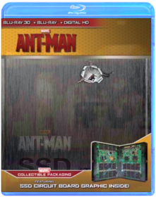 Peyton Reedlimited edition steel book blu ray 3dCaptain America: Civil War Anthony & Joe RussoThe most explosive clash to ever rock the Marvel Cinematic Universe ignites a firestorm of conflict in the game-changing epic, CAPTAIN AMERICA: CIVIL WAR. In the wake of collateral damage, government pressure to rein in the Avengers drives a deep wedge between Captain America (Chris Evans) and Iron Man (Robert Downey Jr.), causing a catastrophic rift that turns the two friends into bitter enemies. Against a backdrop of divided loyalties, their fellow Avengers must deal with the fallout. Pick a side in this spectacular adventure, packed with mind-blowing action and suspense.Spider-Man: Homecoming Jon WattsA young Peter Parker/Spider-Man (Tom Holland), who made his sensational debut in Captain America: Civil War, begins to navigate his newfound identity as the web-slinging super hero. Thrilled by his experience with the Avengers, Peter returns home, where he lives with his Aunt May (Marisa Tomei), under the watchful eye of his new mentor Tony Stark (Robert Downey Jr.). Peter tries to fall back into his normal daily routine – distracted by thoughts of proving himself to be more than just your friendly neighborhood Spider-Man – but when the Vulture (Michael Keaton) emerges as a new villain, everything that Peter holds most important will be threatened.Men In Black 3 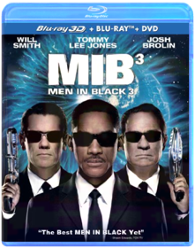 Barry SonnenfeldIn Men in BlackT 3, Agents J (Will Smith) and K (Tommy Lee Jones) are back... in time. J has seen some inexplicable things in his 15 years with the Men in Black, but nothing, not even aliens, perplexes him as much as his wry, reticent partner. But when K's life and the fate of the planet are put at stake, Agent J will have to travel back in time to put things right. J discovers that there are secrets to the universe that K never told him — secrets that will reveal themselves as he teams up with the young Agent K (Josh Brolin) to save his partner, the agency, and the future of humankind.Moana 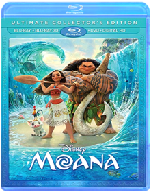 Ron Clements, John Musker, Don Hall, Chris WilliamsFrom Walt Disney Animation Studios comes MOANA, an epic adventure about a spirited teen who sets sail on a daring mission to save her people. Along the way, Moana (Auli'i Cravalho) meets the once mighty demigod Maui (Dwayne Johnson), and together they cross the ocean on a fun-filled, action-packed voyage. Bring home the movie full of heart, humor and oceans of bonus extras!Monsters, Inc. David Silverman, Pete DocterMONSTERS, INC., shattered every DVD-era home entertainment sales record when 11 million DVD/VHS copies of the film were sold during its first week of release. Only THE LION KING, released in the "pre-DVD" era, sold more units when it debuted on VHS in 1995.Monsters University Dan ScanlonDisney Pixar proudly presents the hilarious story of how two mismatched monsters met and became lifelong friends in a movie screaming with laughter and oozing with heart. Ever since college-bound Mike Wazowski (Billy Crystal) was a little monster, he’s dreamed of becoming a Scarer—and he knows better than anyone that the best Scarers come from Monsters University (MU). But during his first semester at MU, Mike’s plans are derailed when he crosses paths with hotshot James P. Sullivan, “Sulley” (John Goodman), a natural-born Scarer. The pair’s out-of-control competitive spirit gets them both kicked out of the University’s elite Scare Program. With their dreams temporarily dashed, they realize they will have to work together, along with an odd bunch of misfit monsters, if they ever hope to make things right. Get ready to party with hours of exclusive bonus extras, including an inside look at the world of monsters and the animated theatrical short film "The Blue Umbrella."Pacific Rim 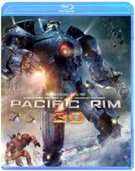 Guillermo del ToroWhen legions of monstrous creatures, known as Kaiju, started rising from the sea, a war began that would take millions of lives and consume humanity's resources for years on end. To combat the giant Kaiju, a special type of weapon was devised: massive robots, called Jaegers, which are controlled simultaneously by two pilots whose minds are locked in a neural bridge. But even the Jaegers are proving nearly defenseless in the face of the relentless Kaiju. On the verge of defeat, the forces defending mankind have no choice but to turn to two unlikely heroes a washed up former pilot (Charlie Hunnam) and an untested trainee (Rinko Kikuchi) who are teamed to drive a legendary but seemingly obsolete Jaeger from the past. Together, they stand as mankind's last hope against the mounting apocalypsePacific Rim Uprising When the aliens known as Kaiju invade Earth again, Mako Mori (Rinko Kikuchi) recruits her estranged brother Jake (John Boyega), son of fallen hero Stacker Pentecost (Idris Elba), to lead a new international team of Jaeger robot pilots. Aided by Dr. Hermann Gottlieb (Burn Gorman) and Dr. Newton Geiszler (Charlie Day), the young pilots must combat bigger, more advanced monsters to save the world. Director Steven S. DeKnight takes the reins from Guillermo del Toro for this sequel to 2013's Pacific Rim. ~ Kaitliin Elise Miller, RoviPassengers Morten TyldumTwo passengers (Chris Pratt and Jennifer Lawrence) aboard a spacecraft traveling to a distant planet are brought out of suspended animation by a technical glitch — 90 years before the vessel is due to reach its destination. Together, they must investigate the malfunction that awakened them, which could threaten the safety of the ship. Michael Sheen and Laurence Fishburne co-star. Directed by Morten Tyldum (The Imitation Game).The Peanuts Movie Steve MartinoDREAM BIG AND LAUGH ALONG with good ol Charlie Brown, Snoopy, Lucy, Linus and the rest of the beloved Peanuts gang as you ve never seen them before in a brand-new feature film from the imagination of Charles M. Schulz and the creators of Ice Age. Join everyone s favorite eternal optimist, Charlie Brown, as he embarks on a heroic quest, while his beagle pal Snoopy takes to the skies to pursue his archnemesis, the Red Baron. It s a hilarious and heartwarming adventure that proves every underdog has his day!
Bonus Features:
Disc 1: Theatrical Feature Blu-ray 3D
Disc 2: Theatrical Feature Blu-ray
**6 Snoopy Snippets
** Better When I m Dancin Meghan Trainor Music & Lyric Videos
**You Never Grow Up Charlie Brown
**Snoopy s Sibling Salute
**Learn to Draw Snoopy, Woodstock and Charlie Brown
**Get Down with Snoopy and Woodstock Music Video
**Behind the Scenes of Better When I m Dancin
**Snoopy s Playlist
Disc 3: DVD
Digital HDPirates of the Caribbean: On Stranger Tides Johnny Depp, Rob MarshallPirates of the Caribbean On Stranger Tides 5 Disc LIMITED EDITION (Blu-ray 3D, Blu-ray 2 Disc, DVD, Digital Copy) Includes Lego Mini Black PearlPixels Chris ColumbusWhen aliens misinterpret video-feeds of classic arcade games as a declaration of war against them, they attack the Earth, using the games like PAC-MAN, Donkey Kong, Galaga, Centipede and Space Invaders as models for their various assaults. President Will Cooper (Kevin James) has to call on his childhood best friend, ’80s video game champion Sam Brenner (Adam Sandler) to lead a team of old-school arcaders (Peter Dinklage and Josh Gad) to defeat the aliens and save the planet.Planes The world of Cars takes flight in Planes, Disney's high-flying animated comedy revved up with action and adventure. Join Dusty, a crop duster with sky-high dreams and a once-in-a-lifetime chance to take on the world's fastest flyers in the greatest air race ever. Dusty has a huge heart but two big problems...he's not exactly built for speed, plus he's afraid of heights. His courage is put to the ultimate test as this unlikely hero aims higher than he ever imagined. With a little help from his friends, Dusty finds the courage to be more than he was built for—and the inspiration to soar.Dawn of the Planet of the Apes  War For The Planet Of The Apes War For The Planet Of The ApesCaesar (Andy Serkis) and his apes are forced into a deadly conflict with an army of humans led by a ruthless colonel (Woody Harrelson). After the apes suffer unimaginable losses, Caesar wrestles with his darker instincts and begins his own mythic quest to avenge his kind.The Polar Express Chris Van Allsburg, Robert ZemeckisAll the enchantment, all the adventure, all the joy of The Polar Express – all in astonishing true Blu-ray 3D! This instant holiday classic filmed in performance-capture animation by Robert Zemeckis and starring Tom Hanks now delivers a whole new cargoload of immersive Blu-ray™ magic. Reach out and grab your ticket as the exciting next dimension in home entertainment transports you to the North Pole in amazing fashion!Puss in Boots Puss in BootsPuss in Boots
You loved him in Shrek…now see where the one-and-only swashbuckling feline found his fame – and a very big pair of boots – in the “hilariously funny” (Associated Press) animated epic! Lover, fighter and outlaw Puss In Boots (Antonio Banderas) is off on the adventure of his nine lives as he teams up with Kitty Softpaws (Salma Hayek) and Humpty Dumpty (Zach Galifianakis) for the ultimate showdown with the notorious Jack and Jill (Billy Bob Thornton and Amy Sedaris). Here’s the true story of The Cat, The Myth, The Legend – Puss In Boots!
Puss in Boots: The Three Diablos
As the dust from his latest adventure begins to settle, Puss in Boots finds himself at a crossroads between two destinies – hero and outlaw. When a desperate princess hires Puss to recover her stolen ruby, he is reluctantly partnered with the three little kittens. Adorable. Fuzzy. Deadly. The minute the mittens are off, these Three Diablos wreak havoc on Puss' mission to recover the stolen ruby from the notorious French thief, The Whisperer. Can Puss tame these three little devils in time to recover the ruby?
Disc One (Blu-ray 3D)
- Puss in Boots (3D)
- Puss in Boots: The Three Diablos (3D)
Disc Two (Blu-ray)
- Puss in Boots (HD)
- Puss in Boots: The Three Diablos (HD)
Disc Three (DVD)
- Puss in Boots movie
- Digital CopyResident Evil: Afterlife 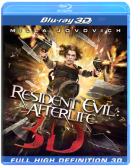 Paul W. S. AndersonThe fourth installment of the hugely successful Resident Evil franchise, Resident Evil: Afterlife is again based on the wildly popular video game series, and will this time be presented in 3-D. In a world ravaged by a virus infection, turning its victims into the Undead, Alice (Milla Jovovich), continues on her journey to find survivors and lead them to safety. Her deadly battle with the Umbrella Corporation reaches new heights, but Alice gets some unexpected help from an old friend. A new lead that promises a safe haven from the Undead takes them to Los Angeles, but when they arrive the city is overrun by thousands of Undead - and Alice and her comrades are about to step into a deadly trap.Resident Evil: Retribution Paul W.S. AndersonThe Umbrella Corporation’s deadly T-virus is spreading across the globe, transforming ordinary people into legions of undead. Headed for extinction, the human race has just one hope: Alice (Milla Jovovich). She’s on a mission, fighting her way through cities and across continents, all inside Umbrella's prime research facility. Old friends become new enemies as she battles to escape and discovers that everything that she believes may not even be true.The Secret Life of Pets Chris RenaudComedy superstars Louis C.K., Eric Stonestreet, and Kevin Hart make their animated feature-film debut that finally answers the question: what do your pets do when you're not home? When their owners leave for the day, pets from the building gossip with their friends, satisfy their sweet tooths, and throw outrageous parties. But when a pampered terrier (C.K.) and his unruly new "roommate" from the pound (Stonestreet) get lost in the urban jungle of New York City, they must put aside their differences to survive the epic journey back home.Shrek ShrekYou've never met a hero quite like Shrek, winner of the first Academy Award r for Best Animated Feature. The endearing ogre sparked a motion picture phenomenon and captured the world's imagination with the Greatest Fairy Tale Never Told! Relive every moment of Shrek's (Mike Myers) daring quest to rescue the feisty Princess Fiona (Cameron Diaz) with the help of his loveable loudmouthed Donkey (Eddie Murphy) and win back the deed to his beloved swamp from scheming Lord Farquaad (John Lithgow). Enchantingly irreverent and "monsterously clever" (Leah Rozen, People Magazine), Shrek is an ogre-sized adventure you'll want to see again and again!Shrek 2 Andrew Adamson, Kelly Asbury, Conrad VernonThis Blu-ray 3D & DVD combo pack contains Shrek 2 in 3D on Blu-ray plus a DVD edition of movie.
Everyone's favorite larger-than-life hero returns in Shrek 2, the #1 comedy of all time hailed by critics and audiences alike as even better than its Oscar®-winning predecessor! USA Today proclaims "there are so many jokes and jests, not even a jelly-bellied ogre could consumer them all in one sitting."
Happily ever after never seemed so far far away when a trip to meet the in-laws turns into another hilariously twisted adventure for Shrek and Fiona. With the help of his faithful steed Donkey, Shrek takes on a potion-brewing Fairy Godmother, the pompous Prince Charming, and the famed ogre-killer, Puss In Boots, a ferocious feline foe who's really just a pussycat at heart!
Note: To watch the 3D version of this movie, you need a 3D HDTV, compatible 3D glasses, a Blu-ray 3D player, and a high-speed HDMI 1.4 cable.
Languages: English, Français, Español, Português. Subtitles: English, English SDH, Français, Español, Português.Shrek 3: Shrek the Third Shrek the ThirdGet ready for Thirds - the greatest fairy tale never told continues with a whole new hilarious comedy of royal proportions. When his frog-in-law suddenly croaks, Shrek embarks on another whirlwind adventure with Donkey and Puss In Boots to find the rightful heir to the throne. Everyone's favorite cast of characters is back, along with a magical misguided Merlin, an awkward Arthur, a powerful posse of princesses, and a bundle of unexpected arrivals. Only Shrek can tell a tale where everyone lives happily ever laughter!Shrek 4: Shrek Forever After Shrek Forever AfterIt started with a loveable ogre - who befriended a talking donkey - and rescued a beautiful princess in the unforgettable story that broke the mold for all animated films to follow. Now comes Shrek Forever After, the hilarious and fitting finale to the record-breaking, Oscarr-winning movie phenomenon. Longing for the days when he was a 'real ogre,' Shrek signs a deal with Rumpelstiltskin to get his roar back - but turns his world upside down in the process. Donkey suddenly can't remember his best friend; Fiona is now a tough warrior princess; and Puss in Boots is one fat cat! Together, they have just 24 hours to reverse the contract and restore happily forever after to close the final chapter.Sin City: A Dame to Kill For Robert Rodriguez teams with Frank Miller to direct this follow-up to Sin City from a script by Miller and William Monahan based on preexisting stories along with new ones written for the big screen. Josh Brolin stars in the adaptation of the comic miniseries (Sin City: A Dame to Kill For), which tells the backstory of Clive Owen's Dwight character as he is wrapped up in the thralls of femme fatale, Ava (Eva Green). Also new to the series is Joseph Gordon-Levitt, who plays Johnny, a mysterious gambler set on taking down his sworn enemy in a high-stakes game of life and death. Mickey Rourke, Rosario Dawson, Jessica Alba, and Jaime King return for the Dimension Films release, with Jamie Chung and Dennis Haysbert stepping into roles left by Devon Aoki and the late Michael Clarke Duncan. Jeremy Wheeler.Sing Garth JenningsFrom Illumination Entertainment, the studio that brought you The Secret Life of Pets comes an animated comedy about finding the music that lives inside all of us. Sing stars Academy Award winner Matthew McConaughey as Buster Moon, an eternally optimistic koala who puts on the world's greatest singing competition to save his crumbling theater; Academy Award winner Reese Witherspoon as Rosita, an overworked and underappreciated mother of 25 piglets desperate to unleash her inner diva; Scarlett Johansson as Ash, a punk rock porcupine with a beautiful voice behind her prickly exterior; and Taron Egerton as Johnny, a young gangster gorilla looking to break free of his family's felonies. Sing is the musical comedy event of the year!The Spongebob Movie: Sponge Out of Water 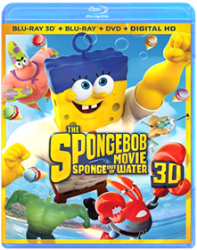 SpongeBob SquarePants, the world's favorite sea dwelling invertebrate, comes ashore to our world for his most super-heroic adventure yet.Star Trek: Into Darkness 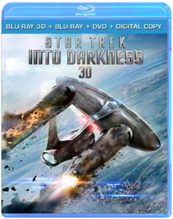 J.J. AbramsWhen the crew of the Enterprise is called back home, they find an unstoppable force of terror from within their own organization has detonated the fleet and everything it stands for, leaving our world in a state of crisis. With a personal score to settle, Captain Kirk leads a manhunt to a war-zone world to capture a one man weapon of mass destruction. As our heroes are propelled into an epic chess game of life and death, love will be challenged, friendships will be torn apart, and sacrifices must be made for the only family Kirk has left: his crewRogue One: A Star Wars Story Gareth EdwardsFrom Lucasfilm comes the first of the STAR WARS stand-alone films — ROGUE ONE: A STAR WARS STORY, an epic adventure. In a time of conflict, a group of unlikely heroes band together on a mission to steal the plans to the Death Star, the Empire's ultimate weapon of destruction. This key event in the STAR WARS timeline brings together ordinary people who choose to do extraordinary things, and in doing so, become part of something greater than themselves.Star Wars: The Force Awakens 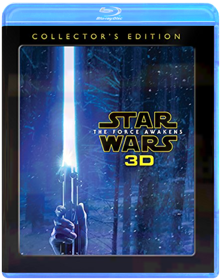 J.J. AbramsVisionary director J.J. Abrams brings to life the motion picture event of a generation. As Kylo Ren and the sinister First Order rise from the ashes of the Empire, Luke Skywalker is missing when the galaxy needs him most. It's up to Rey, a desert scavenger, and Finn, a defecting stormtrooper, to join forces with Han Solo and Chewbacca in a desperate search for the one hope of restoring peace to the galaxy.Teenage Mutant Ninja Turtles 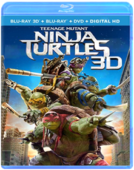 Jonathan LiebesmanDarkness has settled over New York City as Shredder has an iron grip on everything from the police to the politicians. The future is grim until four unlikely brothers rise from the sewers and discover their destiny as Teenage Mutant Ninja Turtles.Teenage Mutant Ninja Turtles: Out Of The Shadows Dave GreeenMichelangelo, Donatello, Leonardo, and Raphael are back to battle bigger, badder villains, alongside April O’Neil (Megan Fox), Vern Fenwick (Will Arnett), and a newcomer: the hockey-masked vigilante Casey Jones (Stephen Amell). After supervillain Shredder escapes custody, he joins forces with mad scientist Baxter Stockman (Tyler Perry) and two dimwitted henchmen, Bebop (Gary Anthony Williams) and Rocksteady (WWE Superstar Stephen “Sheamus” Farrelly), to unleash a diabolical plan to take over the world. As the Turtles prepare to take on Shredder and his new crew, they find themselves facing an even greater evil with similar intentions: the notorious Krang.Terminator Genisys Terminator GenisysTERMINATOR GENISYS (3-DISC COMBO/3D-BD/2D-BD/DVD/DIGITAL HD)(3-D)Texas Chainsaw John LuessenhopIn 1974, enraged townspeople hunt down and kill every member of the Sawyer family for committing a series of grisly murders. Decades later and hundreds of miles away, a young woman learns that she has inherited a Texas estate from a grandmother she never knew she had. After embarking on a road trip with friends to uncover her roots, she finds she is the sole owner of a lavish, isolated Victorian mansion. But her newfound wealth comes at a price as she stumbles upon a horror that awaits her in the mansion's dank cellarsTop Gun 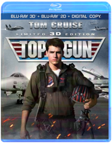 Top GunTop Gun takes a look at the danger and excitement that awaits every pilot at the Navy's prestigious fighter weapons school. Tom Cruise is superb as Pete "Maverick" Mitchell, a daring young flyer who's out to become the best of the best. And Kelly McGillis sizzles as the civilian instructor who teaches Maverick a few things you can't learn in a classroom.Toy Story Trilogy 3D Experience Disney Pixar's Toy Story, Toy Story 2 and Toy Story 3 in an all-new way! Join Woody, Buzz, and all your favorite toys in a whole new dimension as the action and characters jump off the screen and into your living room on Blu-ray 3D with pristine picture and theater-quality sound.Transformers: Age of Extinction 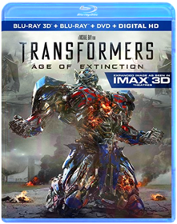 Michael BayFrom director Michael Bay and executive producer Steven Spielberg comes the best 'Transformers' ever! With humanity facing extinction from a terrifying new threat, it's up to Optimus Prime and the Autobots to save the world. But now that our government has turned against them, they'll need a new team of allies, including inventor Cade Yeager (Mark Wahlberg) and the fearsome Dinobots!Transformers: The Last Knight Tron: Legacy 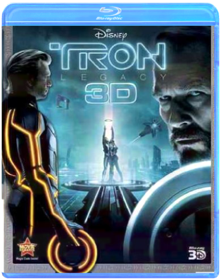 TRON:LEGACY 3D
No description available.
Genre: Action/Adventure
Rating: PG
Release Date: 0000-00-00
Media Type: Blu-RayUp Directed By Pete Docter, Co-Directed By Bob PetersonImmerse yourself in a whole new dimension of family entertainment. Bring the 3D experience home with this hilariously uplifting adventure from the creators of Monsters, Inc. and Finding Nemo. Part rascal, part dreamer, retired balloon salesman Carl Fredricksen is ready for his last chance at high-flying excitement. Tying thousands of balloons to his house, Carl sets off to the lost world of his childhood dreams. But unbeknownst to Carl, Russell, an overeager 8-year-old wilderness explorer who has never ventured beyond his backyard, is in the wrong place at the wrong time - Carl's front porch! Experience every thrilling moment of their adventure as it comes to life before your eyes in spectacular Disney Blu-ray 3D - Magic in a new dimension that will send your spirits soaring Up, Up and away!Walking With Dinosaurs The gigantic voice talents of Justin Long (ALVIN AND THE CHIPMUNKS franchise) and John Leguizamo (ICE AGE franchise) take you on a thrilling prehistoric journey the whole family will enjoy! In a time when dinosaurs rule the Earth, the smallest of the pack — a playful Pachyrhinosaurus named Patchi — embarks on the biggest adventure of his life. As he tries to find his place in a spectacular world filled with fun-loving friends and a few dangerous foes, Patchi will discover the courage he needs to become the leader of the herd and a hero for the ages.The Wizard of Oz METALPAK EDITIONWorld War Z A former UN investigator is thrust into the middle of trying to stop what could be the end of the world. Worldwide destruction sends him around the globe seeking clues about what they are fighting and what it will take to defeat it, as he tries to save the lives of billions of strangers, as well as his own beloved family.Wreck-It Ralph Rich MoorePrepare for adventure when 'the most original film in years' (Bryan Erdy, CBS-TV) that thrilled audiences of all ages drops on Blu-ray! From Walt Disney Animation Studios comes a hilarious, arcade-game-hopping journey in Disney's Wreck-It Ralph. For decades, Ralph has played the bad guy in his popular video game. In a bold move, he embarks on an action-packed adventure and sets out to prove to everyone that he is a true hero with a big heart. As he explores exciting new worlds, he teams up with some unlikely new friends including feisty misfit Vanellope von Schweetz. Then, when an evil enemy threatens their world, Ralph realizes he holds the fate of the entire arcade in his massive hands. Featuring an all-star voice cast and breakthrough bonus features that take you even deeper into the world of video games, Disney's Wreck-It Ralph has something for every player.The Wolverine 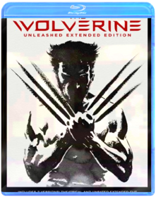 James MangoldHugh Jackman returns as The Wolverine and faces his ultimate nemesis in an action packed life-or-death battle that takes him to modern day Japan. Vulnerable for the first time and pushed to his limits, Logan confronts not only lethal samurai steel but also his inner struggle against his own immortality; an epic fight that will leave him forever changed.X-Men: Days of Future Past Bryan SingerX-Men: Apocalypse X-Men: Apocalypse |


 Made with Delicious Library
Made with Delicious Library